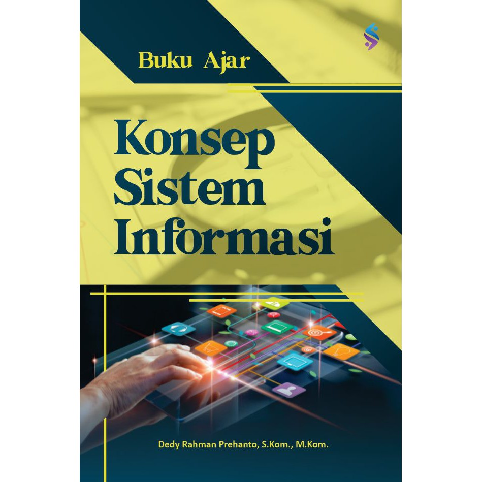
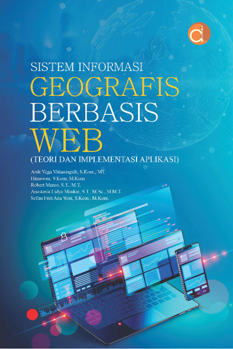

Pengertian Sistem Informasi dan contoh penerapan pada duni industri
Teknologi dan manusia saat ini menjadi satu kesatuan dan menjadi dua hal yang tidak dapat dipisahkan.
Dimana,kedua faktor tersebut saling berkaitan dan dapat digabung menjadi sebuah sistem. Istilah
populer untuk saat ini dinamakan dengan sistem informasi.
Berikut adalah buku tentang sistem informasi:


Buku Sistem Informasi